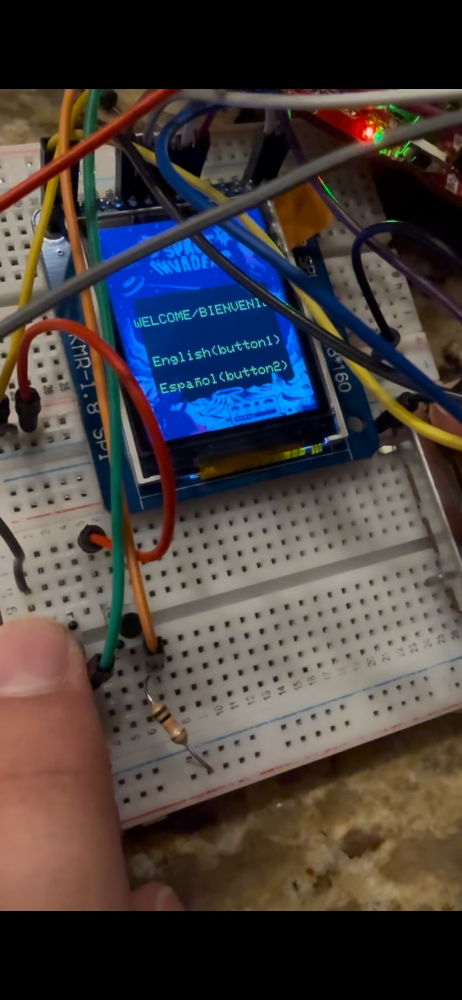
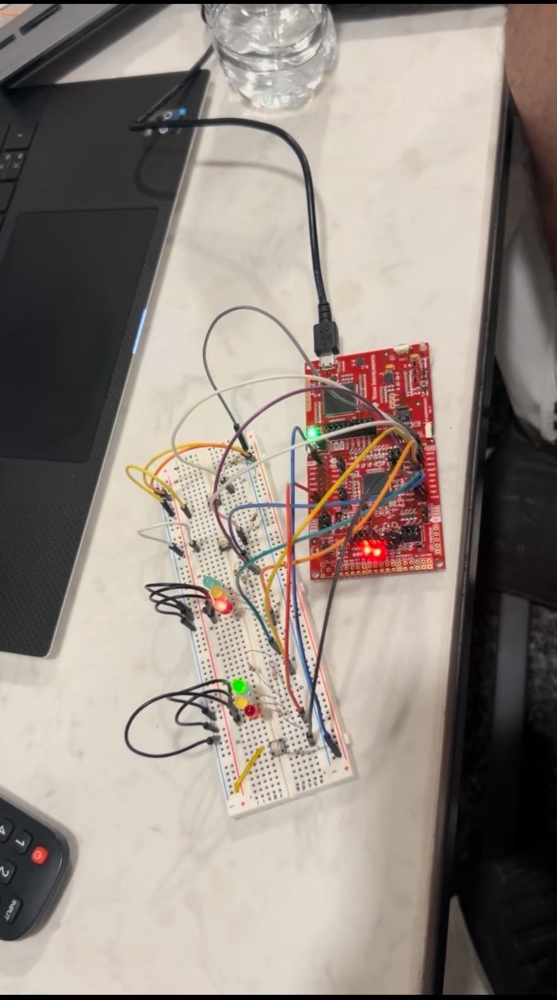

Space Invaders on the TM4C
Designed and implemented a full game loop on the MSPM0 LaunchPad with custom graphics and audio drivers.
A full catalogue of what I've built — from embedded hardware to systems software and web apps.

Designed and implemented a full game loop on the MSPM0 LaunchPad with custom graphics and audio drivers.

Created a traffic management system using finite state machines and simulated sensors to optimize traffic flow.
A complete CHIP-8 emulator implementing all 35 opcodes, 64×32 display, two timers, hex keypad, and a disassembler.
A proof-of-work blockchain with Merkle trees, REST API, tamper detection, and distributed consensus across nodes.
A malloc/free/realloc replacement in C with explicit free lists, boundary tags, immediate coalescing, and a heap checker.
A Git subset built from scratch — blob/tree/commit objects, SHA-1 content addressing, index, log, and checkout.
A fully functional Unix shell built from scratch — pipes, I/O redirection, glob expansion, history, and 10 built-ins.
An HTTP/1.1 web server built from raw TCP sockets — multi-threaded, request parsing, router, and static file serving.
An NFA-based regex engine using Thompson's construction — match, search, findall, sub, and compile.
A full-text search engine with inverted index, BM25/TF-IDF scoring, Porter stemmer, and boolean/phrase/wildcard queries.
A fully-connected MLP built using only NumPy — backpropagation, Adam optimizer, dropout, and L2 regularization.
A Jinja2-inspired template engine with a lexer, recursive descent parser, template inheritance, filters, and auto-escaping.
A React-inspired Virtual DOM — h(), diff(), patch(), typed patch records, and a stateful Component class.
A feature-rich task manager CLI with a custom arg parser, ANSI table renderer, 9 subcommands, and JSON persistence.
A social media concept that prevents prerecorded media uploads to combat AI-generated and fake content in real-time feeds.
A TypeScript web application serving the Laredo community — built to connect local resources and services.
Want to see the source code for any of these?
View All on GitHub →